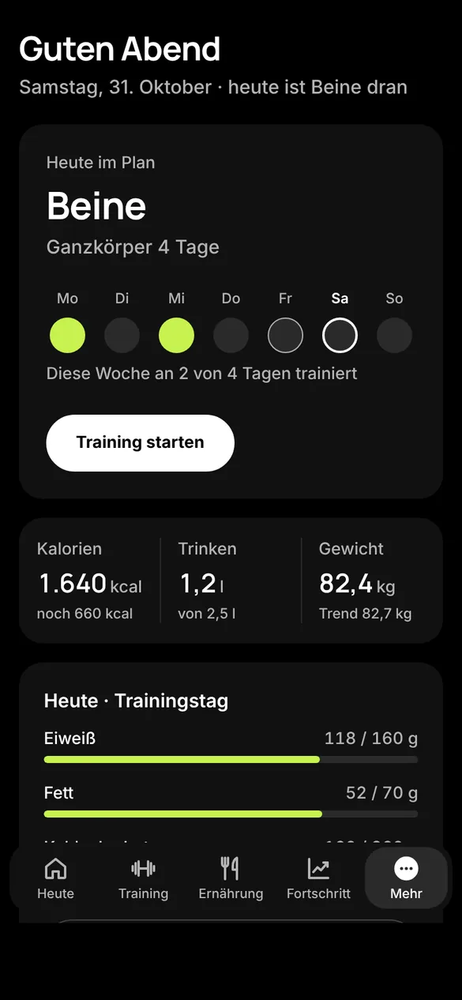
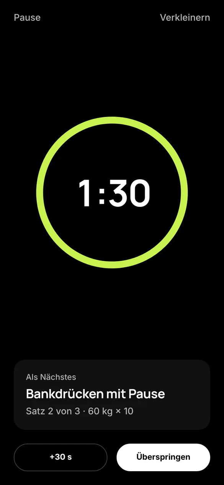
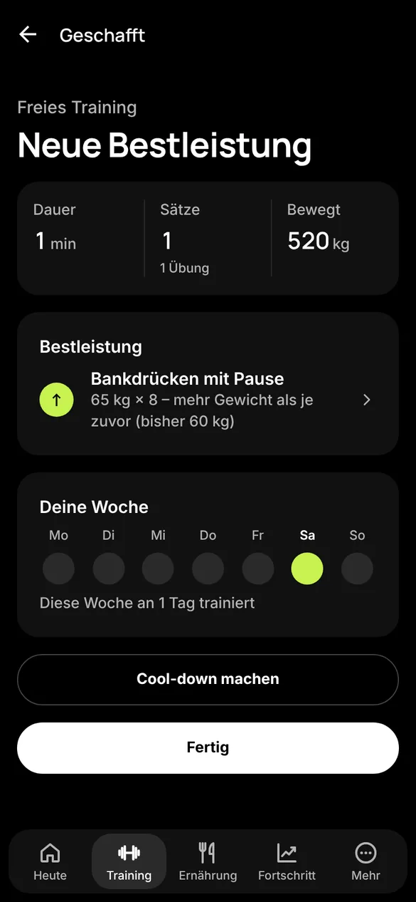

Myhealth
Training, Ernährung und Fortschritt in einer ruhigen App für dein iPhone.
Pläne mit Pausen-Timer, Kalorien mit Barcode-Scanner, dein Gewichtstrend – ohne Konto, alles bleibt auf deinem Gerät.
Kein KontoÖffnen und loslegen. Keine Anmeldung, keine E-Mail.
Auf deinem GerätTagebuch, Training und Fotos verlassen dein iPhone nicht.
Erscheint baldFür iPhone. Gerade in der Testphase.
Ein Blick in die App
Vier Bereiche, ein ruhiger Aufbau. Wähle einen aus und sieh dir den echten Bildschirm an.

Heute: was ansteht, deine Woche, Kalorien, Trinken, Gewicht.
Deine Daten bleiben bei dir
Kein Konto, kein Server. Dein Tagebuch, dein Training und deine Fotos werden nur auf deinem iPhone gespeichert.
- Barcode-ScannerGesendet wird nur der Barcode an Open Food Facts – nie dein Tagebuch.
- Sicherung in deiner HandEine Sicherungsdatei entsteht nur, wenn du sie selbst erstellst.
- App-SperreAuf Wunsch mit Face ID oder Gerätecode beim Öffnen.
Training, das mitzählt
Hak deine Sätze ab und die Pause startet von selbst – groß, mit dem nächsten Satz und einem spürbaren Countdown in den letzten drei Sekunden.
Am Ende siehst du, was du geschafft hast. Neue Bestleistungen erkennt die App aus deinen eigenen früheren Trainings.

